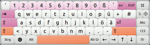
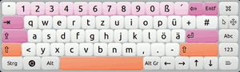
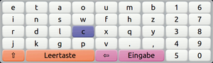

onBoard
Dieser Artikel wurde für die folgenden Ubuntu-Versionen getestet:
Ubuntu 16.04 Xenial Xerus
Ubuntu 14.04 Trusty Tahr
Zum Verständnis dieses Artikels sind folgende Seiten hilfreich:
Automatischer Start von Programmen, optional
Archive entpacken, optional
Einen Editor öffnen, optional
Root-Rechte, optional
Onboard  ist eine einfache Bildschirmtastatur für GNOME oder Xfce, welche auch an die eigenen Wünsche und Bedürfnisse angepasst werden kann. Die Bildschirmtastatur eignet sich für Besitzer von Tablett-PCs oder auch Menschen mit eingeschränkter Beweglichkeit. Damit die Bildschirmtastatur bei jedem Sitzungsstart geladen wird empfiehlt sich ein Eintrag im Autostart [3].
ist eine einfache Bildschirmtastatur für GNOME oder Xfce, welche auch an die eigenen Wünsche und Bedürfnisse angepasst werden kann. Die Bildschirmtastatur eignet sich für Besitzer von Tablett-PCs oder auch Menschen mit eingeschränkter Beweglichkeit. Damit die Bildschirmtastatur bei jedem Sitzungsstart geladen wird empfiehlt sich ein Eintrag im Autostart [3].
Installation¶
Sofern das Programm nicht auf dem System vorhanden ist kann es über die Paketverwaltung nachinstalliert [1] werden:
|  |
| Onboard mit Ambiance-Theme |
onboard
 mit apturl
mit apturl
Paketliste zum Kopieren:
sudo apt-get install onboard
sudo aptitude install onboard
Nach erfolgreicher Installation kann Onboard entweder über den Namen oder in einem Anwendungsmenü unter "Zubehör → Onboard" aufgerufen [2] werden.
Sollte der Fingertouch nicht funktionieren, dann ist bei Ubuntu 14.04
gsettings set org.onboard.keyboard touch-input none
im Benutzerverzeichnis auszuführen. Soll das beim Anmeldebildschirm (mit Stylus oder Eraser funktioniert Onboard) auch mit Fingertouch funktionieren, dann muss das gsettings auch für lightdm geändert werden als Root:
xhost +SI:localuser:lightdm su lightdm -s /bin/bash gsettings set org.onboard.keyboard input-event-source XInput gsettings set org.onboard.keyboard touch-input none
Siehe auch Fehlerbericht 1297692.
Bedienung¶
Das Programm ist intuitiv zu bedienen. Zusätzliche Tasten erreicht man über die beiden farbigen Schaltflächen am rechten Fensterrand. Über die blaue Schaltfläche erreicht man unter anderem den Nummernblock - sowie frei belegbare Tasten. Über die rote Schaltfläche erreicht man neben den Funktionstasten die "Einstellungen".
Einstellungen¶
| Einstellungen | |
| Reiter | Beschreibung |
| "Layouts" | Tastaturlayouts hinzufügen, entfernen oder bearbeiten. |
| "Snippits" | Hier können Textstücke verwaltet werden. |
| "Scanning" | Einstellung der Tastenauswahl im Scanning-Modus |
| "General" | Anzeige des Icons in der Systemleiste (de)aktivieren. |
Bei einmal aktiviertem Icon kann man den Einstellungsdialog auch über einen Rechtsklick auf dieses erreichen.

Snippits¶
Snippits kann man über die blaue Schaltfläche erreichen. Neben dem Nummernblock erscheinen hier 9 frei nutzbare Tasten. Um diese zu konfigurieren einfach eine unbenutzte Taste anwählen. Im sich nun öffnenden Dialog den Text z.B. http://wiki.ubuntuusers.de eingeben und mit "Save snippet" speichern. Die Taste kann anschließend sofort genutzt werden. Alternativ über die Einstellungen den Reiter "Snippits" aufrufen. Hier kann man über die Schaltflächen "Hinzufügen" oder "Löschen" diese den Wünschen entsprechend anpassen.
Scanning-Modus¶
 In diesem sehr speziellen Modus können die Tasten ohne Bewegung des Mauszeigers ausgewählt werden. Er eignet sich damit vor allem für Personen, die nur sehr wenig Interaktions-Möglichkeiten mit dem Computer haben. Den Modus aktiviert man in den Einstellungen. Dort muss ein Häkchen bei Tastatur-Scanning aktivieren gemacht und das Layout "Grid" (in älteren Versionen "Scan") ausgewählt werden. Daraufhin erscheint ein völlig anderes Layout, bei dem der Scan-Vorgang für eine Taste in drei Schritten erfolgt:
Mit einem Mausklick wird ein neuer Auswahlvorgang gestartet.
Es erfolgt eine horizontale Zeilenbewegung der blau markierten Taste. Diese kann mit einem weiteren Mausklick gestoppt werden.
Danach wird eine vertikale Spaltenbewegung durchgeführt. Sobald man nun nochmals die Maustaste betätigt wird die aktuell hinterlegte Taste ausgegeben.
Tastaturlayout¶
Layout personalisieren¶
Anordnung und Aussehen der virtuellen Tastatur kann völlig frei angepasst werden. Ein persönliches Layout kann dazu in den Einstellungen erstellt werden.
Beschriftung¶
Um den Tasten eine andere Beschriftung zu geben, wird die entsprechende gewählte sok-Datei im Ordner ~/sok/layouts bzw. /usr/share/onboard/layouts in einem Editor [5] (ggfs. mit Rootrechten [6]) bearbeitet. Die Änderungen
<key group="bottomrow" id="RCTL" label="Strg" modifier="control" sticky="true"/> <key group="bottomrow" id="LCTL" label="Strg" modifier="control" sticky="true"/>
bewirken, dass die Tasten CTRL als Strg angezeigt werden.
Zusätzliche Layouts installieren¶
Erstellte und heruntergeladene Layouts können im Ordner ~/.sok/layouts (lokal verfügbar) oder /usr/share/onboard/layouts (systemweit) angelegt werden. Nun in den Einstellungen das gewünschte Layout laden.
Größe und Platzierung¶
Das Tastatur-Fenster ist normalerweise frei skalierbar und die letzte Größe sollte bei jedem Start wieder hergestellt werden. Falls dem nicht so ist, kann die Standard-Größe und -Platzierung der Anwendung mithilfe des Konfigurationseditor geändert werden:
gconftool-2 --set --type int /apps/onboard/height 327 #Höhe des Fensters 327 Pixel gconftool-2 --set --type int /apps/onboard/width 967 #Weite des Fensters 967 Pixel gconftool-2 --set --type int /apps/onboard/horizontal_position 199 #Position der Anwendung vom linken Bildschirmrand 199 Pixel gconftool-2 --set --type int /apps/onboard/vertical_position 230 #Position der Anwendung vom oberen Bildschirmrand 230 Pixel
Sichtbarkeit auf allen Arbeitsflächen¶
Wie man Onboard auf allen Arbeitsfläche sichtbar macht, hängt vom Fenstermanager ab.
Allgemeingültig für alle Fensterverwaltungen kann man dass mit Devil's Pie lösen. Dazu eine neue Regel in ~/.devilspie/onboard.ds erstellen:
( if ( is ( window_class ) "Onboard" ) ) ( pin ) )
Nutzt man Compiz, so muss dieses Verhalten über den CompizConfig Einstellungs-Manager eingestellt werden. Dazu die "Fensterregeln" aktivieren und unter "Sticky" folgendes einfügen:
class=Onboard
Für die Fensterverwaltung Openbox in Lubuntu können ebenfalls "Fensterregeln" individuell für jede Anwendung in ~/.config/openbox/lubuntu-rc.xml festgelegt werden, siehe auch im Openbox-Wiki
.
- Erstellt mit Inyoka
-
 2004 – 2017 ubuntuusers.de • Einige Rechte vorbehalten
2004 – 2017 ubuntuusers.de • Einige Rechte vorbehalten
Lizenz • Kontakt • Datenschutz • Impressum • Serverstatus -
Serverhousing gespendet von